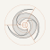

AI矿策 · AI Mining Policy · 品牌标识 · 第 10 轮
星系：把分散的消息，读成清楚的变化
三条旋臂从外向内，收进一颗清楚的核心。外面是散在各国、各语言、各来源的矿业消息和法规，中心是 AI矿策给出的那一个清楚判断。旋臂按黄金螺线构建，主标只用一个颜色，平涂，不靠渐变和特效。
品牌定位
网站要做什么
把全球矿企公告、监管通知和海外报道收进来，整理成中文，保留来源和原文链接，让读者看清“哪里变了、影响谁”。免费，不用注册。
给谁看
矿业公司管理层和投资者；法务、合规和政府关系人员；行业分析和研究者；关注海外矿业的中文读者，例如阿根廷锂矿。
标识要传达的感觉
可信、清楚、有全球视野、长期可靠。像一份认真编辑的行业报告，不像一个流行 App。
长期原则
主标单色平涂，能盖章、能刻、能烫金；从 16 像素到安全帽贴纸都成立；不追随渐变、玻璃、霓虹等流行做法。几十年不改形。
主标 · 长期不变的部分
构建 · 半径按黄金比例 φ 递增，三臂相隔 120°

使用规则
- 颜色：墨 #14161A，铜 #C8612C，纸 #F6F4EF。铜只用在核心，是全套标识唯一的彩色。
- 单色：旋臂和核心同色，用于盖章、刻印、烫金、传真。
- 安全区：四周至少留出一个核心直径的 2 倍。
- 最小尺寸：屏幕 16 像素，印刷 6 毫米。
- 不要：拉伸、改旋转方向、给旋臂换三种颜色、加描边或阴影。
落到读者会看到的地方
矿业日报 · 2026-11-04
示例标题：某国修订矿业特许权费规则，铜、锂项目适用新税率
示例导读：一句话说清发生了什么、影响哪些项目和公司。
示例 · 3 家独立来源 · AI 整理，不构成法律意见
AI矿策 · AI Mining Policy
aiminingpolicy.com
App 图标质感 · 可以随时代更新，主标不变
① 三金 · 微光推荐
三条旋臂各带一点铜、青铜、钢的色调，饱和度压得很低。整体读作银色，细看是三种金属，像钛金属的几种表面处理。
② 曜石银
纯银灰单色，三条臂用三个明度区分，跟 Cursor 立方体的三个面同一个道理。最克制，神秘感最强。
③ 地层银
每条臂分成三层细线，像岩层，也像星系旋臂的细部。是线条型（学 GPT 的线），大图最耐看，小图会自动合成实心。
④ 铜辉
只用铜一个颜色，深浅变化。铜是人类最早大量使用的金属，暖色，品牌色最好记。
放进 Dock · 和别的 App 并排
寓意 · 改了什么 · 学了什么
寓意
- 从外向内：分散的消息和法规，收成一个清楚的判断，这就是网站要做的事。
- 三条旋臂：铜、青铜、铁，人类的三个金属时代。
- 中心的核：AI，也是硅，今天的芯片材料。
- 整体是星系：地球上的铜和铁，最早都在恒星和超新星里形成。从星辰到矿，再从矿到 AI。
和上一版比改了什么
- 去掉星空、星云和绿色底，背景回到近黑色。
- 三种不同颜色改成一个颜色家族。
- 立方体晶核改成一颗发光的核。
- 旋臂两头收尖，头部贴着核，没有毛刺和缺口。
从 AI 图标学到的
- GPT、Grok：黑白两色，神秘感来自暗底和留白。
- Claude：只用一个颜色，长期不换。
- Cursor：同一种灰的三个明度，做出体积感。
- 只借思路，不用任何一家的形状和颜色。
从矿业资讯网站学到的
- 金色已经拥挤：Kitco、Benchmark 以金黄为主色，Northern Miner、长江有色、我的钢铁网用作点缀。
- 藏蓝太常见：Argus、我的钢铁网、上海有色网都用，可信但难区分。
- 红绿留给涨跌：上海有色网红涨绿跌，Kitco 正好相反。品牌色避开红绿。
- 所以选墨 + 纸 + 一点铜，用 SVG 矢量主标；中文同行多用小尺寸位图。